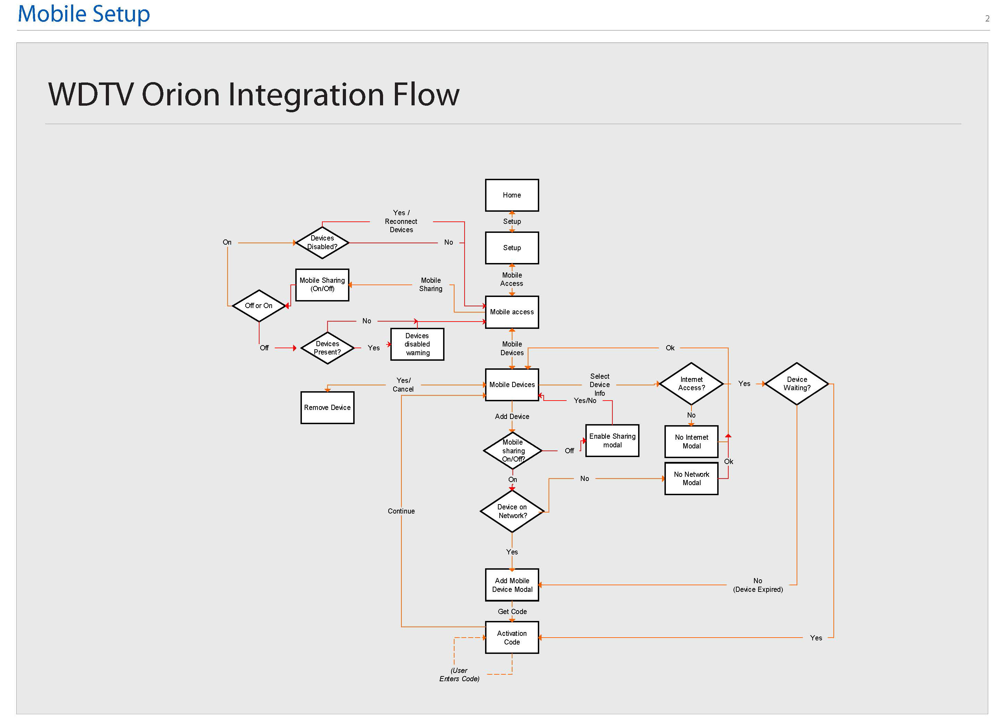

WD TV Mobile Integration
Store & Share Photos

Background
Mobile phones are extremely versatile and a growing numbers of consumers primarily use their camera phone for capturing images, video and sharing with others. However this puts an increasing demand for storage on their phones. We wanted to use this opportunity and connect smart phones to WD TV Live media player to utilize the extra storage and have a rich viewing experience on their home entertainment system.
Objective
Design flows and screens for WD TV player and Smart Phone integration to provide a seamless and secure cross screen experience.
My Role
Interaction Design, Prototyping, Collaboration with Engineering.
Task Flow

Wireframes
Below are the illustrations of the screens that the user would go through in setting up the pairing with their phone.
WD TV Screens
Mobile App Screens
Initial Setup and Pairing flow with the network device.
Upload Photos flow to the network device.